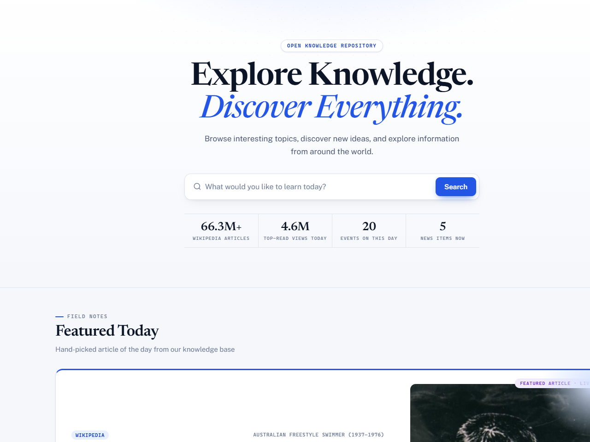

All of Wikipedia, one portal.
WikiExplore turns any visit into a reading session on today's Wikipedia: the featured article boots first, and everything it presents — sections, previews, footnotes — comes live from Wikimedia's public APIs.

The honest rebuild.
WikiExplore began as a hackathon build that shipped ~27 KB of hardcoded articles pretending to be a library. It looked like a reading portal; it wasn't one.
The rebuild deleted the pretense. WikiExplore is the honest version: everything live, nothing canned. It runs entirely on Wikimedia's public APIs and opens on today's real featured article — the same page a reader would find on Wikipedia itself, every visit.
One feed call in, a reading experience out.
- FEED One Wikimedia feed call powers the home page — featured article of the day, most-read, on-this-day history, and news.
- READER The reader boots today's featured article — the real one, served live by Wikimedia's public APIs.
- SECTIONS It pulls the article's live sections with a table of contents.
- PREVIEWS Cross-links weave in previews along the way.
- FOOTNOTES Each chapter's citations merge into real numbered footnotes.
No database, no backend, no framework — the whole experience runs in the browser, in ~4,240 lines of hand-written vanilla JS.
Restraint is the architecture.
No database, no backend, no framework
A reading portal's job is presenting Wikimedia's content well — WikiExplore adds no infrastructure of its own to do it. Every capability ships as hand-written vanilla JS (~4,240 lines), which keeps the project exactly what it claims to be.
Everything live, nothing canned
The home page runs on a single Wikimedia feed call — featured article of the day, most-read, on-this-day history, and news. Nothing is hardcoded, so what a visitor sees is what Wikipedia is serving that day.